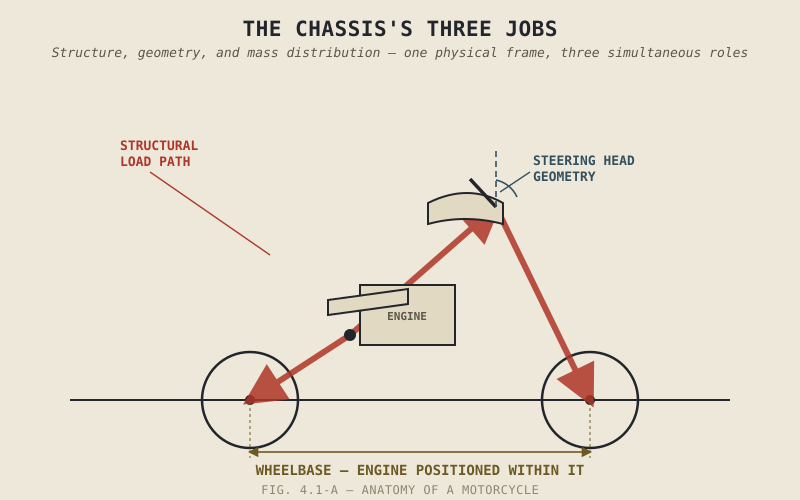

Two motorcycles can share an identical engine and an identical transmission, built by the same manufacturer in the same year, and steer into a corner with completely different personalities — one falling into a turn eagerly with barely a nudge on the bars, the other requiring real, deliberate effort to lean at all. Nothing in Part II or Part III explains that difference. It has nothing to do with power, torque, gearing, or final drive. It comes entirely from a structure this book has mentioned constantly and explained not at all: the chassis.
Chapter 1.1 opened this entire book by declaring that a motorcycle cannot balance itself, and Chapter 1.2 explained that this comes down to a line of contact rather than a rectangle. Both of those claims describe the chassis's geometry, even though neither chapter used that word. This chapter finally makes that connection explicit, framing exactly what the chassis is actually for before Part IV spends nine more chapters explaining how.
Three Jobs, Not One
The chassis does at least three distinct jobs simultaneously, and it's worth separating them clearly before this part goes any further. First, it's structural: the frame physically holds the engine, transmission, wheels, subframe, and rider in fixed positions relative to each other, and has to transmit every force generated under acceleration, braking, and cornering between the wheels and everything else without failing or flexing in unpredictable ways — a requirement Chapter 4.9 will return to directly. Second, it's geometric: the specific angles and dimensions built into the frame and steering head — rake and trail chief among them, the exact terms Chapter 1.2 and Chapter 2.11 both used without explaining — determine how eagerly or reluctantly a motorcycle wants to lean, turn, and stabilize itself once rolling, the self-stabilizing behaviour Chapter 1.2 first described without naming its mechanical cause. Third, it's a mass distribution problem: where the engine sits within the frame, how long the wheelbase is, and how the swingarm is built together determine the motorcycle's centre of mass and how weight shifts under braking, acceleration, and cornering, a topic Part VIII's physics will eventually quantify in full.
None of these three jobs is optional, and none of them is more fundamental than the others. A chassis that's structurally strong but geometrically wrong produces a motorcycle that's durable and unpleasant to ride. A chassis with excellent geometry but poor mass distribution produces a bike that steers well but handles unpredictably under load.
A chassis isn't just the thing holding a motorcycle together. Its geometry is actively deciding, every second the bike is moving, how willingly it leans, how it self-corrects, and how its weight shifts under load — decisions made in metal, long before a rider ever touches the bars.

A motorcycle chassis shown with its three roles labeled directly on the structure — structural load paths, steering head geometry, and the engine's position relative to the wheelbase.
A Common Misconception, Cleared Up Early
It's easy to picture chassis design as primarily a question of strength — is the frame stiff enough, strong enough, light enough to survive the forces this book has already described. Strength matters, but it's only one of the three jobs named above, and arguably not the one that most defines how a motorcycle actually feels to ride. Two frames built from identical material, to identical strength standards, but with different rake, trail, or wheelbase, can produce motorcycles with completely different personalities — one a nimble, quick-turning machine, the other a stable, unhurried tourer — despite being equally strong and equally well engineered. Chassis design is at least as much about shaping how a motorcycle wants to move as it is about ensuring it doesn't break, and the rest of this part treats both halves of that job with equal seriousness.
Where This Leads
This chapter named the chassis's three jobs without going deep into any of them. Chapter 4.2 starts with the first: how a frame is actually built, the materials and structural layouts manufacturers choose from, and what those choices trade against each other.
Key Concepts to Remember
- The chassis performs three distinct jobs at once: structural (holding everything together under load), geometric (determining how the bike wants to steer and self-stabilize), and mass distribution (setting the centre of mass and how weight shifts under load).
- Chapter 1.1 and Chapter 1.2's earliest claims about a motorcycle's self-balancing behaviour are, mechanically, claims about chassis geometry, even though neither chapter named it directly.
- Chassis strength and chassis geometry are separate questions — two equally strong frames with different geometry can produce motorcycles with completely different riding personalities.
- No single one of the chassis's three jobs is more fundamental than the others; a chassis excelling at one while failing at another still produces a flawed motorcycle.
Cross-References
| ← Ch. 1.1 | First claimed a motorcycle cannot balance itself; this chapter identifies chassis geometry as the mechanical source of that claim. |
| ← Ch. 1.2 | Described a motorcycle's line of contact and its self-stabilizing behaviour once rolling; this chapter names the chassis geometry responsible for both. |
| ← Ch. 2.11 | Mentioned rake without explaining it; Chapter 4.4 will finally deliver that explanation in full. |
| → Ch. 4.2 | Covers frame types and materials, the first of this chapter's three chassis jobs in detail. |
| → Ch. 4.9 | Covers chassis flex and rigidity, returning to the structural job this chapter introduced. |